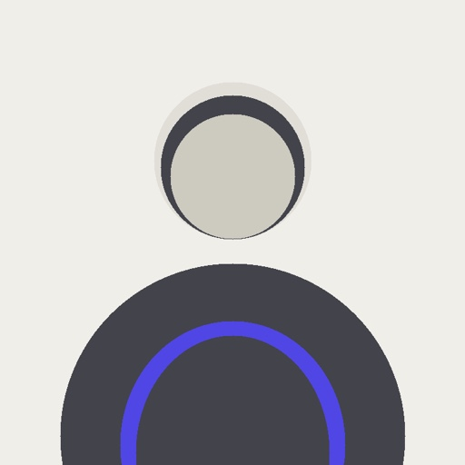

Kole Liu
Independent developer building small, focused software.
About
I’m an independent developer based in Chengdu, China.
I build small, focused software that solves real problems for myself and others.
I also write about the process of building, shipping, and staying independent.